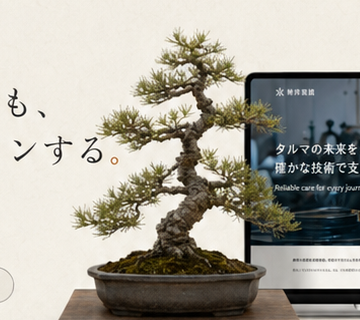
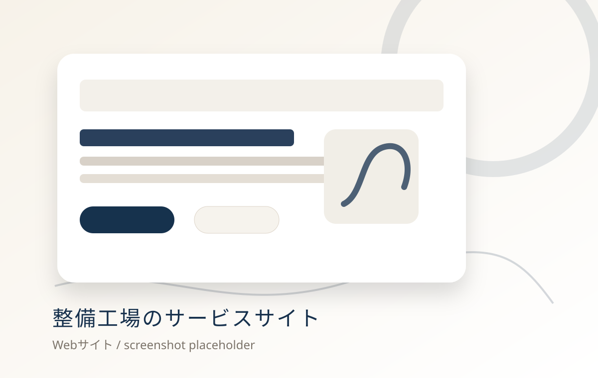
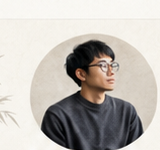
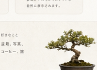

情報設計
ユーザーの目的や課題を整理し、迷わず使える構造を設計します。
Portfolio / Apps / Websites
企画・デザイン・実装まで一貫して行い、ユーザーにとって心地よく、 ビジネスに成果をもたらすデジタル体験をつくります。

整備工場のサービスサイト
予約管理
2026年7月Selected Works
公開URLがあるものはPlaywrightで自動撮影したスクリーンショットを表示します。未撮影のものは仮サムネイルを表示します。

Case Study
地域の整備工場の信頼性と専門性を伝えるため、情報設計を見直し、見やすく使いやすいサイトに再構築。 SEO設計や導線改善により、集客と問い合わせに貢献する構成を目指しました。
Service
企画から実装・改善まで、一貫してサポートします。
ユーザーの目的や課題を整理し、迷わず使える構造を設計します。
ブランドの空気感と使いやすさを両立した画面をつくります。
HTML/CSS/JavaScript、React/Next.jsを中心に実装します。
予約、注文、マッチングなど業務や体験を支えるアプリをつくります。
業務プロセスに合わせた設計、改善、運用の整理を行います。
Motion Ideas
実装時に入れたい、心地よい演出メモ。
要素がスクロールに合わせてやさしく現れます。
カードや画像に微細なスケール変化をつけます。
盆栽やカードが少しずれて動き、奥行きを出します。
見出しや説明文を段階的に表示します。

Profile
実用的で、成果につながるデジタル体験をつくります。企画・デザイン・開発まで一貫して手がけ、 ユーザーにとって心地よく、ビジネスに成果をもたらすプロダクトを追求しています。

Contact
アイデア段階のご相談からでも大歓迎です。お気軽にご連絡ください。